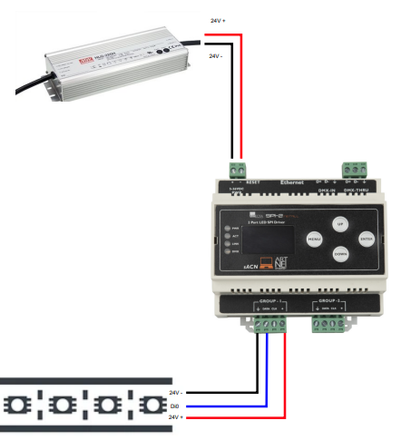
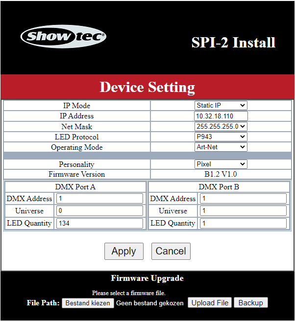
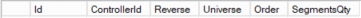
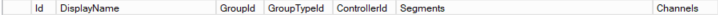
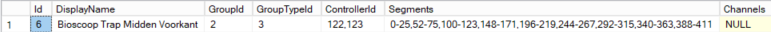

LedControl handleiding
Dit is de handleiding om een LedControl systeem op te zetten.
Benodigde hardware
- Voeding
- Ledcontrollers
- Ledstrips
- Pc
Gebruik een voeding die het wattage van de ledstrip aan kan! (Voor de Havana pixel strip is dit 14,4W per meter)
Sluit de voeding als volgt aan op de ledcontroller en de ledstrips om knipperen van de ledstrips te voorkomen:

LedController instellingen
Showtec SPI-2 Install
De instellingen van de ledcontroller kunnen gedaan worden op de controller zelf of via de webpagina van de controller.
Neem de volgende instellingen over

Vul bij LED Quantity het aantal meter van de ledstrip keer 10 (elke 10 centimeter is apart aanstuurbaar).
Let op dat de Universe bij de 2 ports verschillend zijn, DMX Address maakt niet uit.
Als er niets is aangesloten op een van de uitgangen vul 1 in bij LED Quantity 0 is niet toegestaan.
Volledige handleiding: https://www.highlite.com/en/mwdownloads/download/link/id/17426620/
Showtec NET-2/3 Pocket
Ook deze controller heeft een web interface wat het instellen wat makkelijker maakt.
De username is Admin en het wachtwoord is Admin.
Neem de volgende instellingen over:

Let weer goed op bij Network dat deze verschilt bij de 2 uitgangen.
Volledige handleiding: https://www.huss-licht-ton.de/images/products_download/Manual_34954_1.pdf
Bij het instellen van DMX adressen in de lampen is het belangrijk dat er goed doorgeteld wordt. Bijvoorbeeld 2 lampen met 3 adressen, lamp 1 start op adres 1, lamp 2 start op adres 4, enzovoorts.
Belangrijk! bij beide uitgangen wordt er begonnen met tellen vanaf 1.
Database instellingen
Controllers instellen
De tabellen staan in de Monta_Backend database
De eerste tabel die ingesteld moet worden is tblDmxController

Het LocalIpAddress is niet verplicht om in te vullen
Vervolgens kan de tabel tblDmxUniverses ingesteld worden

In deze tabel moet voor elke uitgang van de controller een rij toegevoegd worden, voorbeeld:

Het ControllerId is het Id uit tabel tblDmxController
De waardes Universe en SegmentQty komt overeen met de instelling in de controller.
De waarde Order kan gebuikt worden om aan te geven welke uitgang eerst komt zoals bij een trap.
Groepen maken
In de tabel tblDmxWarehouseGroup kunnen nu groepen gemaakt worden.

De Name die hier ingesteld wordt is ook de naam die op MontaPortal getoond wordt.
Met IsActive kan een groep aan of uit gezet worden
Nu we de groepen hebben kunnen er subgroepen gemaakt worden in de tabel tblDmxGroups.

De DisplayName die hier ingesteld wordt is ook de naam die op MontaPortal getoond wordt.
Het GroupId is het Id uit de tabel tblDmxWarehouseGroup.
Het GroupTypeId kan meerdere waardes hebben hieronder een lijst van de mogelijkheden
- 1 = controller, de groep bestaat uit een volledige uitgang
- 2 = segmenten, de groep bestaat uit bepaalde segmenten van controlleruitgangen
- 3 = sensoren, de groep bestaat uit segmenten en is specifiek bedoeld voor LedSensorControl
- 4 = dmx kanalen, de groep (of eigenlijk lamp) bestaat uit een aantal kanalen, altijd 3 of 4!
Het ControllerId moet altijd ingevuld worden, dit kunnen er ook meerdere zijn.
De Segments hoeven alleen bij GroupTypeId 2 en 3 ingevuld worden. Een aantal segmenten kan bij elkaar horen zoals bij een traptrede. Om dit te doen kun je de segmenten zo noteren:

Bij elkaar horende segmenten worden doorgeteld met - en gescheiden segmenten door ,.
Om segmenten goed aan te sturen moeten de segmenten doorgeteld worden, als er 4 uitgangen gebruikt worden (2 controllers) begin je dus niet overnieuw met tellen bij een volgende uitgang maar wordt er doorgeteld.
De Channels wordt alleen ingevuld bij GrouptypeId 4. Kanalen worden alleen gescheiden door , en kunnen alleen bestaan uit 3 of 4 kanalen (RGB en RGBW)
Controllers kunnen bij meerdere groepen horen mits die groepen hetzelfde GroupTypeId hebben.
Scenes
In de tabel tblDmxWarehouseScenes staan de scenes die gemaakt kunnen worden in MontaPortal.
Hier is het niet nodig om iets toe te voegen.
MontaPortal
In MontaPortal moet er een thumbnail worden toegevoegd om duidelijk te maken waar de verlichting zicht bevindt.
Deze afbeelding moet dezelfde naam hebben als de Name zoals die in de database in tabel tblDmxWarehouseGroup staat.
De afbeelding moet in de map \\mp-web320.montapacking.nl\cdn.montaportal.nl\PublicFiles\Images\Hardware afbeeldingen\LedControl staan. (Graag zoveel mogelijk in dezelfde stijl als Molenaarsgraaf)
Lokale PC
Om het LedControl programma te kunnen runnen moet er een pc lokaal in het pand zijn om de ledcontrollers aan te sturen. Het programma LedControl moet met 1 argument aangeroepen worden, dit argument is het WarehouseId waar de pc zich bevindt.
Bij het LedSensorControl programma hoeft dat niet omdat dit programma specifiek voor Molenaarsgraaf is en niet op andere locaties wordt gebruikt.
De Pc moet toegang hebben tot MontaWebserviceREST en de ledcontrollers.